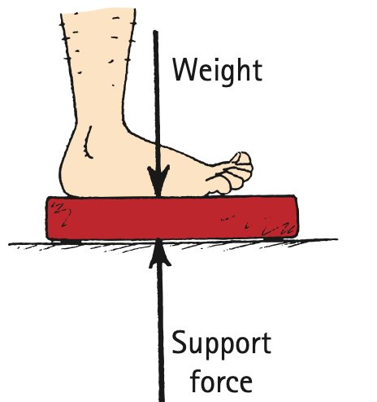
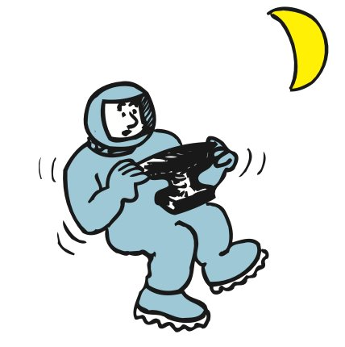
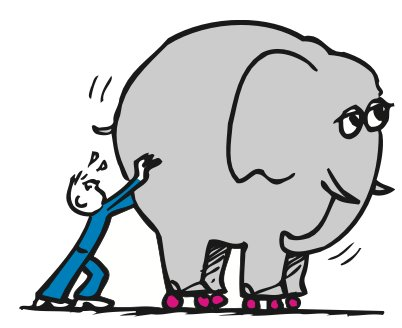

Friction
Friction
When surfaces slide or tend to slide over one another, a force of friction acts. When you apply a force to an object, friction usually reduces the net force and the resulting acceleration. Friction is caused by the irregularities in the surfaces in mutual contact, and it depends on the kinds of material and how much they are pressed together. Even surfaces that appear to be very smooth have microscopic irregularities that obstruct motion. Atoms cling together at many points of contact. When one object slides against another, it must either rise over the irregular bumps or else scrape atoms off. Either way requires force.

The direction of the friction force is always in the direction that opposes motion. An object sliding down an incline experiences friction directed up the incline; an object that slides to the right experiences friction toward the left. Thus, if an object is to move at constant velocity, a force equal to the opposing force of friction must be applied so that the two forces exactly cancel each other. The zero net force then results in zero acceleration and constant velocity.
No friction exists on a crate that sits at rest on a level floor. But, if you push the crate horizontally, you’ll disturb the contact surfaces and friction is produced. How much? If the crate is still at rest, then the friction that opposes motion is just enough to cancel your push. If you push horizontally with, say, 70 newtons, the friction builds up to become 70 newtons. If you push harder—say, 100 newtons—and the crate is on the verge of sliding, the friction between the crate and floor opposes your push with 100 newtons. If 100 newtons is the most the surfaces can muster, then, when you push a bit harder, the clinging gives way and the crate slides.1

Interestingly, the friction of sliding is somewhat less than the friction that builds up before sliding takes place. Physicists and engineers distinguish between static friction and sliding friction. For given surfaces, static friction is somewhat greater than sliding friction. If you push on a crate, it takes more force to get it going than to keep it sliding. Before the time of antilock brake systems, slamming on the brakes of a car was quite problematic. When tires lock, they slide, providing less friction than if they are made to roll to a stop. A rolling tire does not slide along the road surface, and the friction is static friction, with more grab than sliding friction. But once the tires start to slide, the friction force is reduced—not a good thing. An antilock brake system keeps the tires below the threshold of breaking loose into a slide.
It’s also interesting that the force of friction does not depend on speed. A car skidding at low speed has approximately the same friction as the same car skidding at high speed. If the friction force on a tire is 100 newtons at low speed, to a close approximation it is 100 newtons at a higher speed. The friction force may be greater when the tire is at rest and on the verge of sliding, but, once sliding, the friction force remains approximately the same.

More interesting still, friction does not depend on the area of contact. For a narrower tire the same weight is concentrated on a smaller area with no change in the amount of friction. So those extra wide tires you see on some cars provide no more friction than narrower tires. The wider tire simply spreads the weight of the car over more surface area to reduce heating and wear. Similarly, the friction between a truck and the ground is the same whether the truck has four tires or eighteen! More tires spread the load over more ground area and reduce the pressure per tire. The stopping distance when brakes are applied is not affected by the number of tires. But the wear that tires experience very much depends on the number of tires.
Friction is not restricted to solids sliding or tending to slide over one another. Friction occurs also in liquids and gases, both of which are called fluids (because they flow). Fluid friction occurs as an object pushes aside the fluid it is moving through. Have you ever attempted a 100-m dash through waist-deep water? The friction of fluids is appreciable, even at low speeds. So, unlike the friction between solid surfaces, fluid friction depends on speed. A very common form of fluid friction for something moving through air is air resistance, also called air drag. You usually aren’t aware of air resistance when walking or jogging, but you notice it at higher speeds when you ride a bicycle or ski downhill. Air resistance increases with increasing speed. The falling sack shown in Figure 4.4 will reach a constant velocity when the air resistance balances the force due to gravity on the sack.
Mass and Weight
Mass and Weight
The acceleration imparted to an object depends not only on applied forces and friction forces but also on the inertia of the object, its resistance to changes in its motion. How much inertia an object possesses depends on the amount of matter in the object—the more matter, the more inertia. In speaking of how much matter something has, we use the term mass. Our current understanding of mass delves into its source, the recently discovered Higgs boson. (Intriguing, indeed, and we’ll touch on that in Chapter 32.) For now you’ll first want to understand mass in its simplest sense—as a measure of the inertia of a material object. The greater the mass of an object, the greater its inertia.
Mass corresponds to our intuitive notion of weight. We casually say that something has a lot of matter if it weighs a lot. But there is a difference between mass and weight. We can define each as follows:
Mass: The quantity of matter in an object. It is also the measure of the inertia or sluggishness that an object exhibits in response to any effort made to start it, stop it, or change its state of motion in any way.
Weight: Usually the force upon an object due to gravity.

We say usually in the definition of weight because an object can have weight when gravity is not a factor, such as occurs in a rotating space station. In any event, near Earth’s surface and in the absence of acceleration, mass and weight are directly proportional to each other.2
The weight of an object of mass m due to gravity equals mg, where g is the constant of proportionality and has the value 10 N/kg (more precisely, 9.8 N/kg). Equivalently, g is the acceleration due to gravity, 10 m/s2 (the unit N/kg is equivalent to m/s2).
The direct proportion of mass to weight tells us that if the mass of an object is doubled, its weight is also doubled; if the mass is halved, the weight is halved. Because of this, mass and weight are often interchanged. Also, mass and weight are sometimes confused because it is customary to measure the quantity of matter in things (mass) by their gravitational attraction to Earth (weight). But mass is more fundamental than weight; it is a fundamental quantity that completely escapes the notice of most people.
There are times when weight corresponds to our unconscious notion of inertia. For example, if you are trying to determine which of two small objects is the heavier one, you might shake them back and forth in your hands or move them in some way instead of lifting them. In doing so, you are judging which of the two is more difficult to get moving, feeling which of the two is more resistant to a change in motion. You are really comparing the inertias of the objects—their masses.
In the United States, the quantity of matter in an object is commonly described by the gravitational pull between it and Earth, or its weight, usually expressed in pounds. In most of the world, however, the measure of matter is commonly expressed in a mass unit, the kilogram. At the surface of Earth, a brick with a mass of 1 kilogram weighs 2.2 pounds. In metric units, the unit of force is the newton, which is equal to a little less than a quarter-pound (like the weight of a quarter-pound hamburger after it is cooked). A 1-kilogram brick weighs about 10 newtons (more precisely, 9.8 N).3

Away from Earth’s surface, where the influence of gravity is less, a 1-kilogram brick weighs less. It would also weigh less on the surface of planets that have weaker gravity than Earth. On the Moon’s surface, for example, where the gravitational force on things is only one-sixth as strong as on Earth, a 1-kilogram brick weighs about 1.6 newtons (or 0.36 pound). On planets with stronger gravity, it would weigh more, but the mass of the brick is the same everywhere. The brick offers the same resistance to speeding up or slowing down regardless of whether it’s on Earth, on the Moon, or on any other body attracting it. In a drifting spaceship, where a scale with a brick on it reads zero, the brick still has mass. Even though it doesn’t press down on the scale, the brick has the same resistance to a change in motion as it has on Earth. Just as much force would have to be exerted by an astronaut in the spaceship to shake it back and forth as would be required to shake it back and forth while on Earth. You’d have to provide the same amount of push to accelerate a huge truck to a given speed on a level surface on the Moon as on Earth. The difficulty of lifting it against gravity (weight), however, is something else. Mass and weight are different from each other (Figure 4.7).
A nice demonstration that distinguishes mass and weight is a massive ball suspended on a string as shown in the Chapter 2 opener photo and in Figure 4.8. The top string breaks when the lower string is pulled with a gradual increase in force, but the lower string breaks when the lower string is jerked. Which of these cases emphasizes the weight of the ball, and which emphasizes the mass of the ball? Note that only the top string bears the weight of the ball. So, when the lower string is gradually pulled, the tension supplied by the pull is transmitted to the top string. The total tension in the top string is the pull plus the weight of the ball. When the breaking point is reached, the top string breaks. But, when the lower string is jerked, the mass of the ball—its tendency to remain at rest—is responsible for the lower string breaking.

It is also easy to confuse mass and volume. When we think of a massive object, we often think of a big object. An object’s size (volume), however, is not necessarily a good indication of its mass. Which is easier to get moving: a car battery or an empty cardboard box of the same size? So, we find that mass is neither weight nor volume.

Mass Resists Acceleration
Push your friend on a skateboard and your friend accelerates. Now push equally hard on an elephant on a skateboard and the acceleration is much less. You’ll see that the amount of acceleration depends not only on the force but also on the mass being pushed. The same force applied to twice the mass produces half the acceleration; for three times the mass, one-third the acceleration. We say that, for a given force, the acceleration produced is inversely proportional to the mass; that is,
Acceleration ∼ 1/mass
By inversely we mean that the two values change in opposite ways. For example, if one value doubles, the other value halves.
Figure 4.10 was omitted because no matching captured image was supplied. Caption: An enormous force is required to accelerate this three-story-high earth mover when it carries a typical 350-ton load. Also, enormous-force brakes are required to stop it.
Textbook Sections: 4.2, 4.3
Learning Target: Students will explain how friction, mass, and weight affect real-world motion.
- I can explain friction as a force that opposes motion or attempted motion.
- I can distinguish static friction from sliding friction.
- I can explain why an object can remain at rest even when pushed.
- I can distinguish mass from weight.
- I can explain how friction changes the net force on an object.